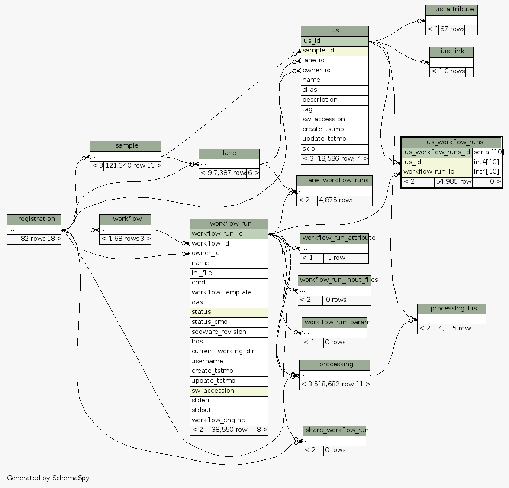

| Table test_seqware_meta_db.public.ius_workflow_runs Deprecated table used to associate ius with workflow runs
|
Generated by SchemaSpy |
| ||||||||||||||||||||||||||||||||||||||||
Table contained 54,986 rows at Mon Mar 31 11:39 EDT 2014 | ||||||||||||||||||||||||||||||||||||||||
Indexes:
| Column(s) | Type | Sort | Constraint Name |
|---|---|---|---|
| ius_workflow_runs_id | Primary key | Asc | pk_ius_workflow_runs |
| ius_id | Performance | Asc | ius_id_ius_workflow_runs |
| workflow_run_id | Performance | Asc | workflow_run_id_ius_workflow_runs |
|
 |